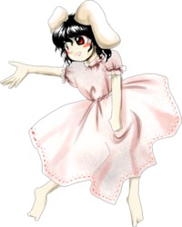
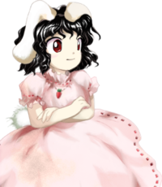
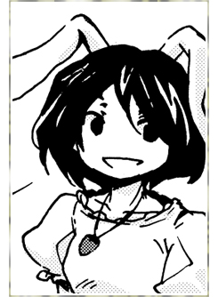

- Welcome to Touhou Wiki!
- Please register to edit. For assistance, check in with our Discord server or IRC channel.
Tewi Inaba
Tewi Inaba ina̠βa̠ te̞ɰᵝi (♫) Tei Inaba | |
|---|---|
|
Tewi Inaba in Phantasmagoria of Flower View White Rabbit of Good FortuneMore Character Titles | |
| Species | |
| Abilities |
Conferring good luck to humans |
| Age |
At least 1,300 years old. |
| Occupation |
Leader of rabbits in Eientei |
| Location | |
Music Themes | |
| |
Appearances | |
| Official Games | |
| |
| Print Works | |
| |
Tewi Inaba (因幡 てゐ Inaba Tewi) is the leader of the many youkai rabbits that live at and guard Eientei. She is also considered to be the leader of all the earth rabbits; it's said that there is not a single youkai rabbit unknown to her, and that all of them will only ever listen to her.[1] Despite her childish appearance, she is very old (at least 1,300 years old). If she really was the White Rabbit of Inaba, then this would make her one of the oldest characters in the Touhou Project.
Tewi is a very lighthearted and playful youkai that's known to lie at times. She even tries to scam Aya Shameimaru out of pocket change during Phantasmagoria of Flower View.
Backstory[edit]
After taking good care of her health and living for a long time, Tewi Inaba became a youkai rabbit. She had become known as the Rabbit of Good Fortune amongst humans, for the good luck she brought them. She is more than 3,000 years old (inferred from a statement she made in Chapter 18 of Silent Sinner in Blue where she said she knew Lord Daikoku (also known as Ookuninushi) personally and was confident that he made better medicine than even that which Eirin Yagokoro was preparing). It's possible that she's the White Hare of Inaba, itself. She has existed since the Bamboo Forest of the Lost was known as "The Tall Grass Cluster" and is said to be the only being that knows it completely. However, it appears she never found out that Lord Daikoku, whom she reveres so much, was taken captive and is sealed at his shrine in Izumo to this day. She and the earth rabbits continue to pound mochi in his name (much to Reisen's annoyance, who was insisting on them pounding it in a Lunarian figure's name).
Tewi had lived in the Bamboo Forest before Eientei was built. Despite Kaguya Houraisan's power over eternity concealing it, in Cage in Lunatic Runagate Tewi said that she knew that it was always there. She finally made herself known to Eirin Yagokoro after a few hundred years. By then, Tewi had already achieved enlightenment. She was master of the Bamboo Forest and the rabbits that lived there.
Eirin and Tewi made a deal. Tewi would protect Eientei from humans, and in return, Eirin would spread her knowledge to the rabbits. Perhaps this was so the beasts could keep up with the youkai, Youkai Mountain, humans, and (later) vampires in Gensokyo's delicate power balance in Perfect Memento in Strict Sense.
Tewi abides by that deal to this day, when she isn't playing pranks on Reisen Udongein Inaba or scamming Gensokyo's general populace, at least.
Background Information[edit]
Name[edit]
Her full name is Tewi Inaba (因幡 てゐ). Unlike Reisen Udongein Inaba, the "Inaba" in Tewi's name is written using kanji which refer to the Inaba Province (因幡国 Inaba no Kuni) in historical Japan. Additionally, the legend of the "White Rabbit of Inaba" (因幡の白兎 Inaba no Shirousagi, a.k.a "The Hare of Inaba" in English) is a story with which Tewi is frequently associated, and may well be the source of her name.
The "wi" (ゐ) in "Tewi" is a kana that was used in Classical Japanese language, but is now nearly obsolete in modern Japanese. In present-day Japanese, wi (ゐ) is pronounced the same as i (い), meaning that her name is phonetically read as "Te-i" (romanised as "Tei"). Why the ゐ kana is used in her name is not explained, but it can be assumed ZUN chose to use it so as to lend a more "ancient" feel to her character. The official romanization of her given name was written as "Tewi" in Imperishable Night, but "Tei" in Phantasmagoria of Flower View, Perfect Memento in Strict Sense and the data files for Hopeless Masquerade.
Design[edit]
When she first appeared in Imperishable Night, she had dark red eyes, black shoulder-length hair, and white fluffy rabbit ears. She is dressed in a frilly, pink nightgown and had nothing on her feet. When she appeared in Phantasmagoria of Flower View, she wore white socks and a carrot necklace.
Her alternative outfit in Phantasmagoria of Flower View was just the same, except her dress is black.
Tewi's Appearances[edit]
| Attention: This section is a stub and it needs expanding with more information related to the section's topic. If you can add to it in any way, please do so. |
- Main article: Story
Tewi tried to defend Eientei and ultimately failed.
Tewi dashed out to enjoy the flowers blooming. She forgot to tell anyone where she was going, causing Reisen Udongein Inaba to go after her.
Tewi Inaba makes another appearance in Legacy of Lunatic Kingdom, but only in Reimu's Pointdevice/No-Death Clear ending. After Reimu leaves Eientei unsatisfied with the conversation she had with Eirin Yagokoro, Tewi appears to her in the Bamboo Forest and asks the shrine maiden questions related to the lunarians. Tewi also states her reason for asking was for reference;she wanted to know the lunarians' weak points and she had some "business" to do with them. Reimu didn't know what Tewi was planning, but she knew that the earth rabbit was going to get beaten up by the lunarians or manipulate them using lucrative words, so she was interested, but at the same time, she didn't care because she had done enough business with the lunarians herself.
Spin-offs[edit]
- Shoot the Bullet
In Shoot the Bullet, Aya Shameimaru encountered Tewi on stage 4 and took photos of her danmaku.
- Hopeless Masquerade
Tewi made a background cameo appearance in Hopeless Masquerade on the Human Village stage. She is seen sitting on a bench with Eirin Yagokoro, Kaguya Houraisan and Reisen Udongein Inaba cheering and drinking alcohol.
- Urban Legen in Limbo
Tewi makes a cameo in the PlayStation 4 version of Urban Legend in Limbo where she pushes Reisen to the stage on her special animation.
Literature[edit]
Tewi mainly watched the events on the sidelines while managing the earth rabbits pounding mochi for the Monthly Lunar Festival. Eirin's handling of the situation impressed the rabbit. When Eirin indicated she had realized who the true culprit behind the unrest was, Tewi mocked how those earth youkai were trying to invade the Moon again even though they already failed before, and said she was glad she sided with Eirin and the Lunarians that had come to Eientei.
At the end, the culprit, Yukari Yakumo, was captured by Watatsuki no Toyohime, in part thanks to Eirin's intervention. Yukari and Ran Yakumo were held under arrest by Toyohime, who told them they would make excellent souvenirs on the moon.
The two youkai were tied up with femtofiber fabric, which the Lunarians have always used to bind the impure. As Toyohime explained what femtofiber fabric was, Yukari realized that it was the same as shimenawa rope. Yukari mocked Toyohime's claims of sealing away the impure using shimenawa, pointing out that the Lunarians even sealed away native gods as well. Toyohime was slightly stunned, but clarified, saying that shimenawa were used to seal those who defy the moon. Confused, Ran asked Yukari what she was talking about, causing the boundary youkai to explain that Lunarians first used shimenawa to prevent the sun goddess Amaterasu from returning to the cave she used to hide in, and since then, Lunarians have used the fabric to limit the movements of the impure. Toyohime agreed, saying that this kept the Lunar Capital safe. At that point, Yukari angrily added that shimenawa wasn't used just to seal the impure, but gods as well. As an example, she told Ran that Lord Daikoku was sealed away long ago at his shrine because the heavenly gods, implied to be the Lunarians, feared him after taking his lands. Ran was shocked that Lord Daikoku was sealed away, and remarked that he was the god that the rabbits were always singing about. As proof of her accusation, Yukari pointed out that the shimenawa at Lord Daikoku's shrine in Izumo were too thick to merely seal away something impure, leaving Toyohime speechless. Yukari, now smiling, smugly pointed out that there was shimenawa at the Moriya Shrine as well, which must have been used to seal away one of Daikoku's sons, Take-Minakata. Ran then realized that must have been why the shimenawa there was so thick.
Fortunately for Toyohime, Reisen interrupted to tell her the other invaders at the moon had been defeated, and Watatsuki no Yorihime needed Toyohime to send them away. Toyohime smiled and prepared to return to the moon, but Reisen was ordered to deliver one last letter to Eientei.
At Eientei, rabbits were pounding mochi in Lord Daikoku's name for the latest Monthly Lunar Festival. Reisen arrived, causing them to pause. Tewi wondered what was going on, and Reisen nervously explained and handed her the letter before leaving. After Reisen was gone, Tewi realized that she must have been one of the Lunar emissaries and wondered why the residents of Eientei feared someone that pathetic in the first place. She then proclaimed to the other rabbits that the Lunar emissary was nothing compared to Lord Daikoku, causing them all to laugh, apparently ignorant of what had become of him.
Tewi plays pranks on Reisen. Lots and lots and lots of pranks.
Gallery[edit]
Illustration of Tewi in Bohemian Archive in Japanese Red
Another illustration of Tewi from BAiJR
Tewi artwork from Phantasmagoria of Flower View
Alternate outfit from Phantasmagoria of Flower View
Tewi in Strange and Bright Nature Deity
Tewi in Silent Sinner in Blue

Tewi on the cover of Inaba of the Moon & Inaba of the Earth

Tewi on the cover of Inaba of the Moon & Inaba of the Earth
Tewi cameo in Cage in Lunatic Runagate
Tewi's Sigil in the Grimoire of Marisa
Relationships[edit]
Kaguya Houraisan[edit]
Eirin Yagokoro[edit]
Tewi made a deal with Eirin to defend Eientei in exchange for Eirin imparting her knowledge to the rabbits. Thus Eirin is an ally, employer, and teacher to Tewi, and Tewi appropriately addresses her as Master. Eirin realizes Tewi's importance to Eientei due to her control over the rabbits, and despite Tewi's pranks, knows that Tewi is there whenever they really need her, should the circumstance arise.[2].
Reisen Udongein Inaba[edit]
Reisen is Tewi's fellow youkai rabbit serving under Eirin, like Tewi. Unlike the earth rabbits, Reisen acts as Tewi's superior, ordering Tewi around and being in charge of looking after her. It is, however, completely up to Tewi herself whether she listens to Reisen or not. Around Eientei, Reisen also tends to be the unfortunate primary recipient of Tewi's pranks.
Gensokyo's youkai rabbits[edit]
All of Gensokyo's youkai rabbits (from Earth, not the Moon) obey Tewi. This is either a sign or a result of Tewi's enlightenment and power. Tewi knows every single youkai rabbit currently in Gensokyo, although this does not stem from the psychic connection that rabbits have. If a new youkai rabbit hypothetically came into being, Tewi would not automatically know about it, although youkai birth rates are so low that Tewi would probably find out very fast.[3]
Skills[edit]
Spell Cards[edit]
| Name | Translated | Comments | Games | Stage | ||
|---|---|---|---|---|---|---|
| Total: 5 | ||||||
| 「エンシェントデューパー」 | "Ancient Duper" | IN GoM |
LW — | |||
| 兎符「開運大紋」 | Rabbit Sign "Great Fortune Crest" | PoFV | Use | |||
| 兎符「因幡の素兎」 | Rabbit Sign "Bare White Rabbit of Inaba" | PoFV | Use | |||
| 脱兎「フラスターエスケープ」 | Runaway Rabbit "Fluster Escape" | StB GoM |
St. 4 — | |||
| 借符「大穴牟遅様の薬」 | Owing Sign "Vulnerary of Ohnamuji-sama" | StB | St. 4 | |||
Additional Information[edit]
- It is said that ordinary animals who live a long time may develop profound magical abilities. Tewi is one of them.
- She seems to be something of a prankster, as shown in Inaba of the Moon and Inaba of the Earth and Eastern and Little Nature Deity. The most common victim is Reisen Udongein Inaba. Despite being older than the moon rabbit, she often acts in a childish manner.
- Tewi is also a shady/suspicious character seen through Inaba of the Moon and Inaba of the Earth, such as her "pillaging mode" (強奪モード gōdatsumōdo), which was seen in chapter 22, carrying a machine gun and wearing sunglasses and a mask. In Oriental Sacred Place chapter 12, she was again seen with sunglasses, but also holding a cigarette while selling colored rabbits during the Hakurei Shrine festival. Earlier, Inaba of the Moon and Inaba of the Earth shows that those colored rabbits were a scam (they're just painted).
- In Inaba of the Moon and Inaba of the Earth, she's depicted as being fond of beer, and again in Hopeless Masquerade.
- Tewi is the only original midboss character to become a fully playable character.
Fandom[edit]
Official Profiles[edit]
|  | ○５面中ボス 地上の兎 因幡 てゐ（いなば てゐ） |
Stage 5 Midboss, Rabbit of the Earth Tewi Inaba Species: Youkai Rabbit After taking good care of her health and living for a long time, Tewi has the power equivalent to that of a youkai. She leads the Earthborn rabbits living in Eientei. Her impetuous temperament makes her seem more like a fairy than a youkai. Humans who lose their way in the bamboo forest around Eientei sometimes catch a glimpse of Tewi. Those who see her are able to find their way out without fail, so she is considered a guide of the forest. It's a shame that they waste the fortune given to them by Tewi on such a small thing, but humans are too clueless to notice their mistake. |
|  | ○幸運の素兎 因幡 てゐ（いなば てゐ） |
Bare White Rabbit of Good Fortune Inaba Tewi
|
|  | 因幡 てゐ （いなば てゐ） 妖怪兎／人間を幸運にする程度の能力 長生きが転じて妖怪になった兎で、野生のウサギたちのリ |
Official Sources[edit]
- 2004/08/15 Imperishable Night - キャラ設定.txt (official profile)
- 2005/08/11 Bohemian Archive in Japanese Red - Tewi
- 2005/08/14 Phantasmagoria of Flower View - キャラ設定.txt
- 2005/12/30 Shoot the Bullet - Stage 4 Spell Card comments
- 2006/11/26 Strange and Bright Nature Deity - Chapter 3
- 2006/12/27 Perfect Memento in Strict Sense - Tewi Inaba
- 2007/06/08 ~ 2009/04/09 Silent Sinner in Blue
- 2007/06/22 ~ 2009/11/22 Inaba of the Moon and Inaba of the Earth
- 2007/06/25 Cage in Lunatic Runagate - Chapter 1
- 2008/04/26 Strange and Bright Nature Deity - Chapter 18
- 2009/07/28 The Grimoire of Marisa - Tewi Inaba's Spell Cards
References[edit]
- ↑ Nicopedia - Tewi Inaba (Retrieved 2012 March 23 at 00:41)
- ↑ Cage in Lunatic Runagate: First Chapter — "She'd be beside you before you know it, and she'd disappear just as quickly. Still, she'd always be around when you really needed her."
- ↑ Cage in Lunatic Runagate: First Chapter — "There aren't any youkai rabbits that Tewi doesn't know." "Would it be so strange to think that one youkai rabbit nobody knows could show up?" "That cannot possibly be true. It's much harder for a new youkai to be born than it is for a human." "It's true that Tewi knows all the youkai rabbits. If Tewi says none of them were hurt, the youkai rabbit at the shrine must be a fake."
| This page is part of Project Characters, a Touhou Wiki project that aims to write proper descriptions for all official characters of Touhou Project. Please keep the character page guidelines in mind when contributing. |